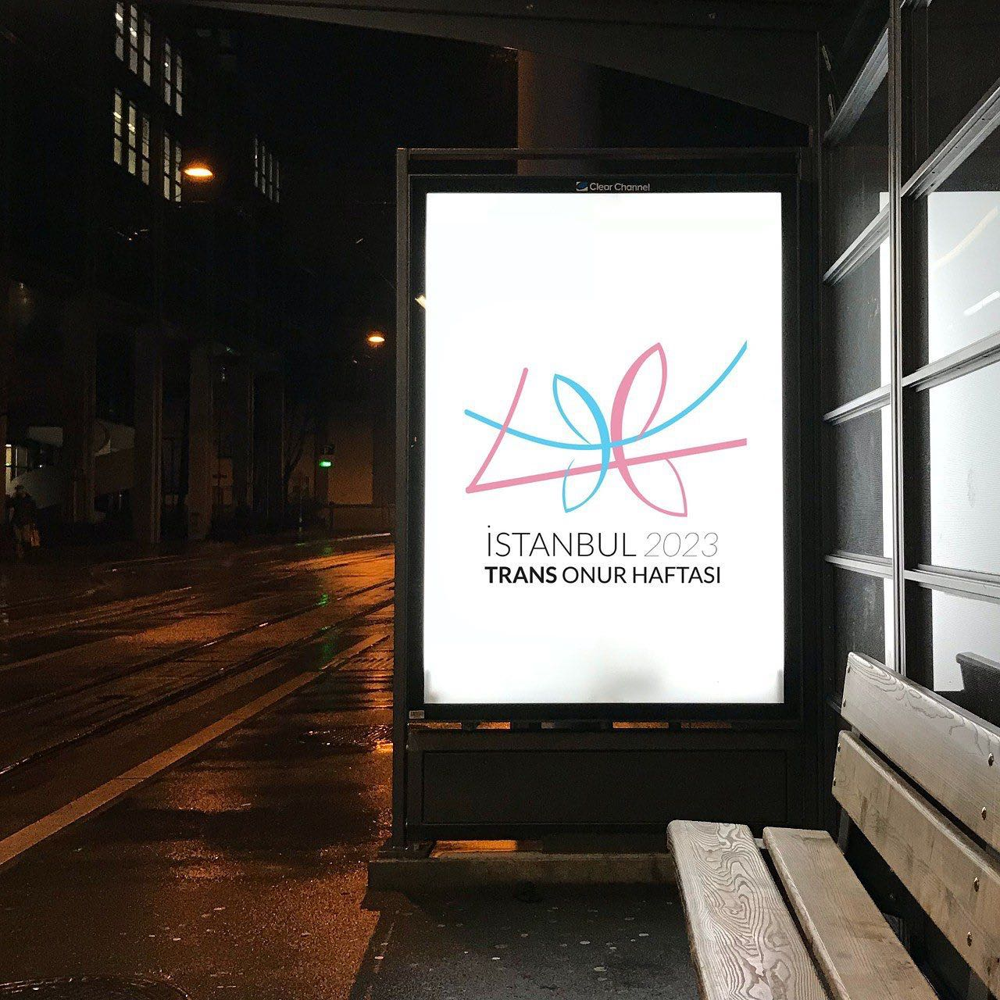
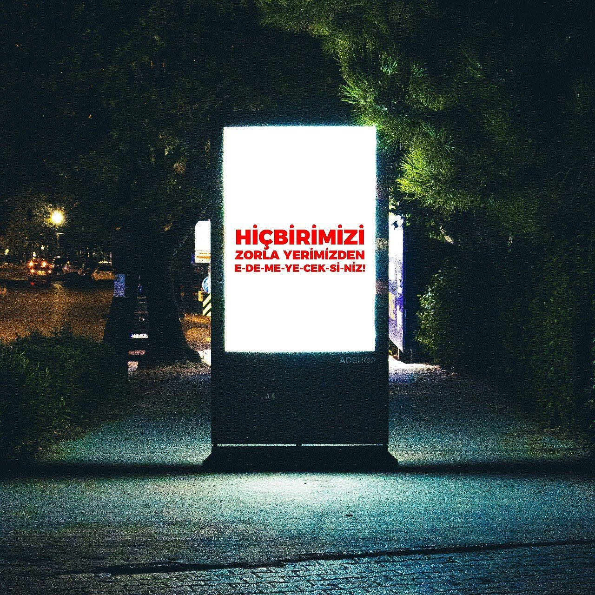
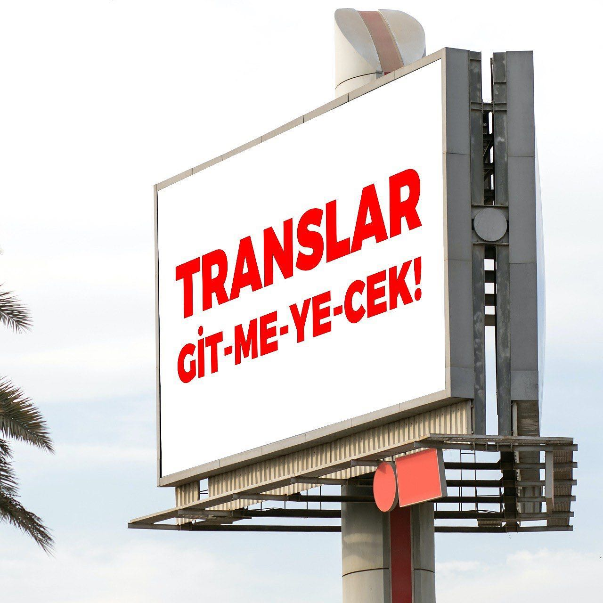
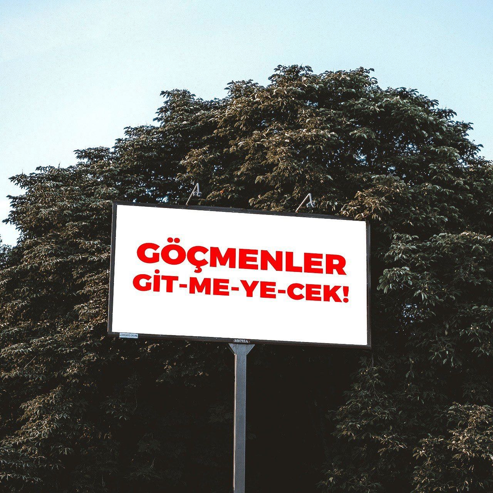
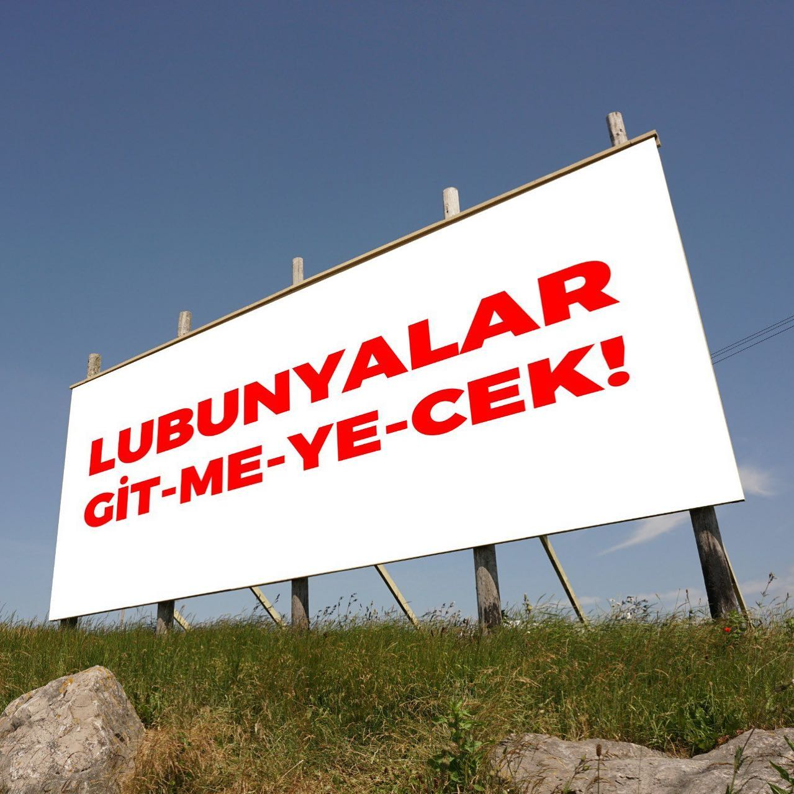
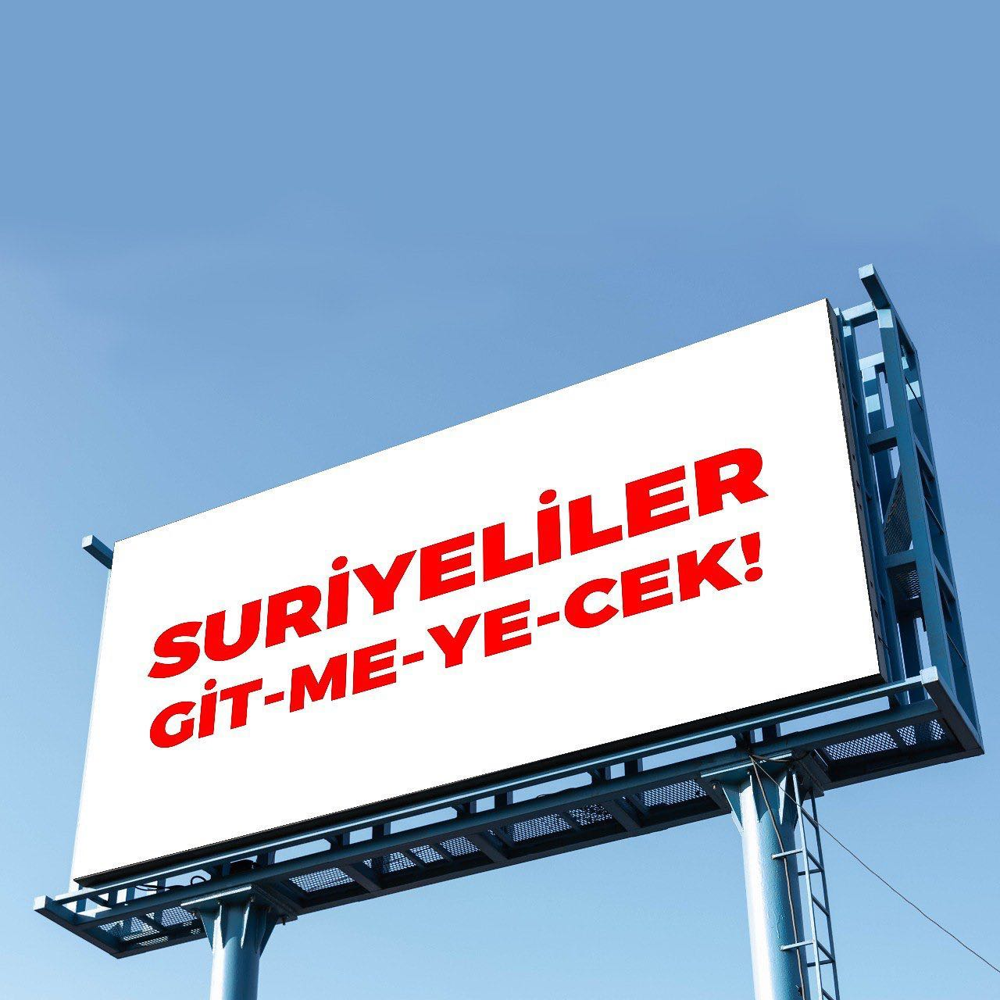
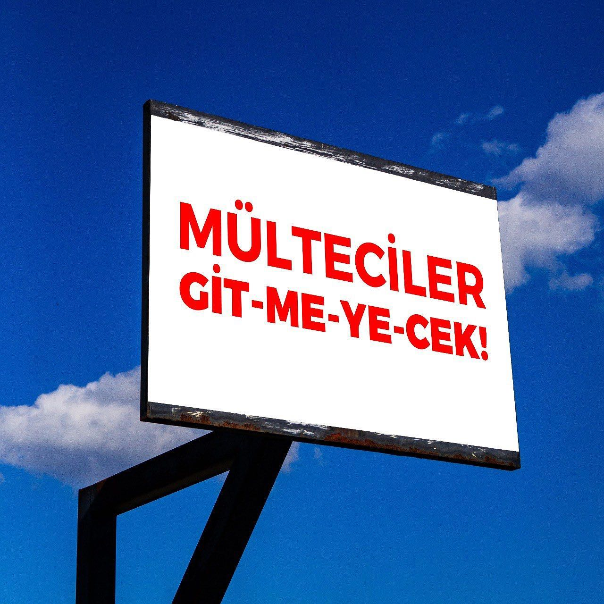

2023-05-30 08:49:00
Ana akım medyada bir şeyler izlemeye çalıştığımız zamanların, yaşadığımız coğrafyada maruz kaldıklarımız sonucu apolitik kalmadığımız sohbetlerin değişmeyen konusu: mülteciler, sığınmacılar ve lgbti+’lar.
Tarihsel sürece bakıldığında seçimler ile hiddetlenen nefret politikalarının izlerini farkında olmasak da her an sırtımızda taşıyoruz. Sokaklar; “biz bizeyken” güvenli, sokaklara nefret cinayetlerinin kanı değmemiş. Ancak “kalabalıklığımız” sorunlara mahal vermiş kimilerince.
Bir şeyleri değiştirebilme umuduyla, tüm öfkemizle bağırmışız durmadan; onlar ise halkların sesini susturacak yeni hedefler göstermiş peş peşe. Kendi yükümlülüklerinden kaçabilmenin peşinde bu iktidar ve tüm güç sahipleri. Bu coğrafyada burjuva muhalefetinden, siyasal islamcısına, kapsayıcı olmayı reddeden herkesin dilinde “gidecekler” söylemi.
İktidara geleninden, muhalefet(!) yapanına kadar hepsinin tek vaadi “göndermek.” Kimi, nereden, nasıl gönderiyorsunuz? Irka, cinsel yönelime, cinsiyet kimliğine indirgediğiniz suçları nasıl oluyor da yafta malzemesi haline getirebiliyorsunuz? Seçimin, yoksulluğun, işsizliğin, suçların sorumluluğunu nasıl oluyor da yapan kişiye değil belli bir topluluğa yüklüyorsunuz? Ne bu coğrafya Suriyeliler yüzünden fakirleşti ne de bizler Suriyeliler gelince işsiz kaldık. Bizi soyanlar, yağmalayanlar, dövenler, yakanlar; yoksul ve göçmen değil buralı ve zengin.
Suriyeli trans kadın Sendi’nin, İzmir’de evlerinde yakılarak öldürülen Suriyeli gençlerin ve daha nicelerinin cinayetleri politiktir.
Yaşadığımız coğrafyada lgbti+ları, sığınmacıları ve mültecileri silmeye yönelik yürütülen politikaların hiçbirini kabul etmiyoruz!
Buradayız, gitmiyoruz; birlikte yaşamak istiyoruz!
#dönmeyizburadayız







